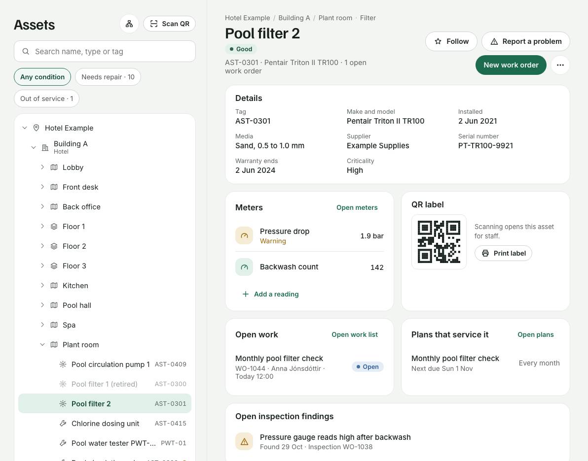
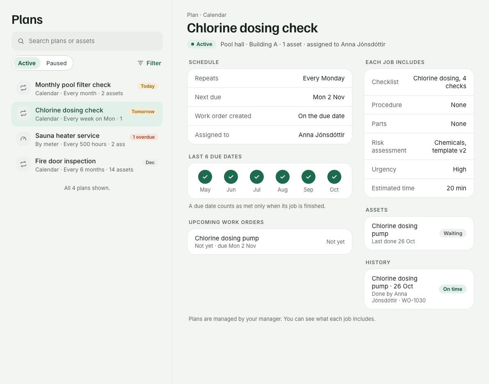
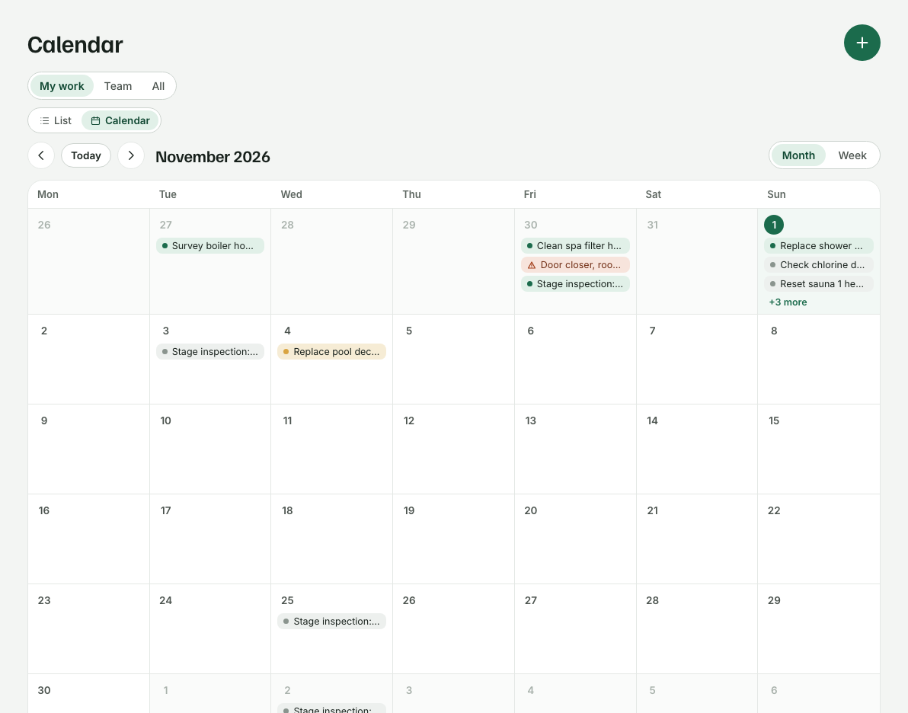
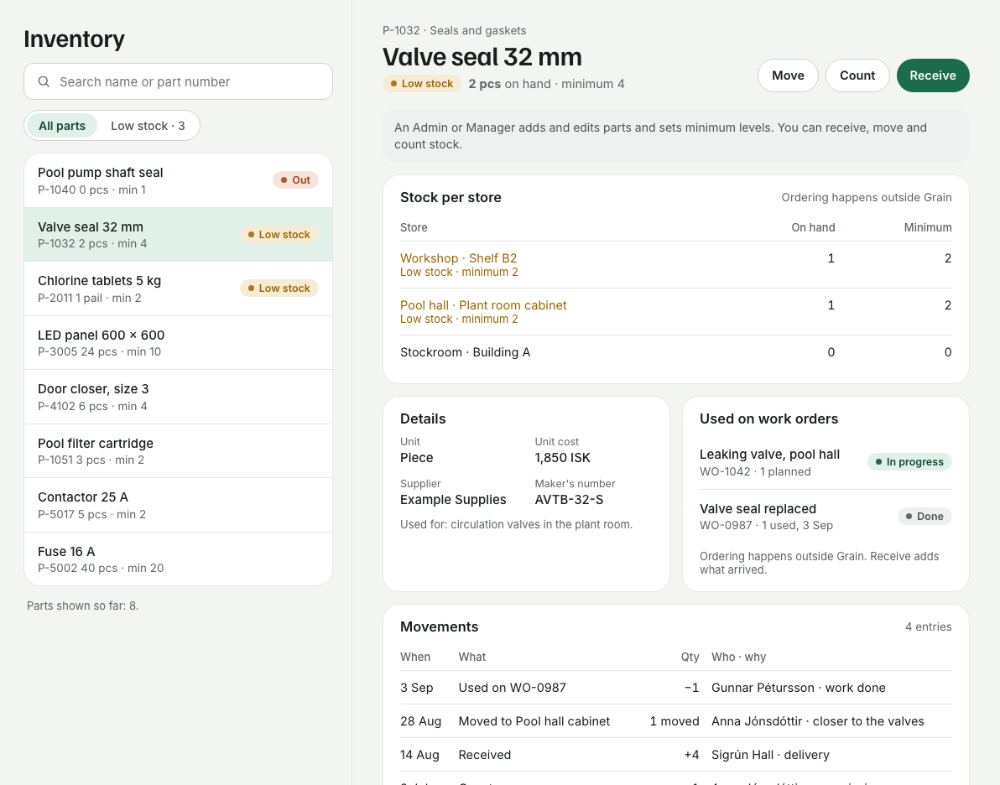
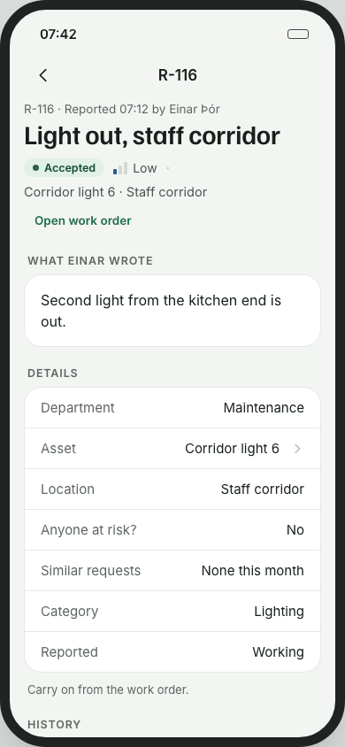
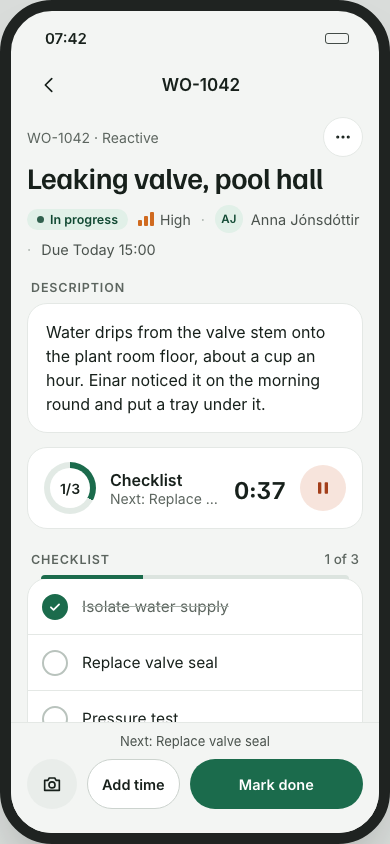

08 / Software · Facilities
Grain / CMMS
Facility-management software that connects a reported problem to the work, equipment, and people needed to resolve it. Grain brings maintenance records and daily operations into a shared workspace, on a computer or a phone.
Interface previews · Fictional example data. Screenshots show selected design prototypes. Names, facilities, dates, quantities, and history are illustrative.

The problem behind the product
Looking after a building means managing both unexpected faults and work that must happen regularly. A report needs a location, someone needs to take responsibility, and the person doing the job needs the right equipment information. When those details live in separate messages and lists, a simple repair can involve a lot of searching.
Grain is a computerized maintenance management system (CMMS) built around those connections. Requests, work orders, assets, plans, and stock records refer to the same facility context. A technician can move from a job to its equipment record; a manager can see what needs attention and who is handling it.
The wider product supports teams working across maintenance, cleaning, security, IT, and construction. This case study follows the maintenance workflow, from a reported fault through to the record left behind after the work is finished.
From report to maintenance record
- 01
Report
Describe the problem and identify the affected equipment or location.
- 02
Review & assign
Turn an accepted request into a work order with a responsible person or team.
- 03
Carry out the work
Follow the checklist and record photos, time, and parts as the job progresses.
- 04
Complete & retain
Finish the required steps and keep the work connected to its asset history.
A work order with the context to act
The work-order view is the centre of the maintenance workflow. Each job brings together its description, urgency, status, due date, and assignment. People can focus on their own work or look across the team, with a selected record open alongside the list on a larger screen.
In the example above, a leaking valve is already in progress. The technician can see what was reported, which valve is affected, the remaining checklist steps, and the replacement part used. That puts the immediate task and its supporting information in the same place.
Completion also has a record: checklist answers, photos, time entries, and parts used. Required information is checked before a job can be marked done. This makes the finished work useful to the next person who needs to understand what happened to that equipment.
Equipment in its physical context
An asset record is more useful when it answers both “What is this?” and “Where is it?” Grain organizes sites, buildings, spaces, and equipment in a shared tree. A named piece of equipment has an asset tag and a place within that structure, so similar items in different rooms can be distinguished.
The asset view brings together equipment details and related maintenance information. Open work and recurring plans remain connected to the item they concern. QR labels provide a way to open the correct equipment context while standing beside it, including when reporting a problem.
The filter example below shows how the location tree, equipment details, readings, and related jobs can sit together. The design goal is continuity: moving between an asset and its work should preserve the context of the task.


Making recurring work visible
Preventive maintenance starts before a fault is reported. Grain’s plans connect a repeating task to the equipment it serves and the work instructions needed to carry it out. The plan view makes the schedule, assignment, and contents of the resulting job visible together.
That distinction matters: the plan describes the recurring requirement, while each work order records a particular instance of the work. A weekly check can remain consistent without losing the individual history of when it was performed.
The calendar gives the same work a time-based view. Switching between personal and team work helps people review upcoming due dates, while the list remains useful for inspecting individual jobs. The screenshots show example schedules and completion history used during interface development.




Connecting parts to the job
A work order may be clear but still wait on a missing part. Grain’s inventory view makes stock visible by item and storage location. A technician can check availability, see low-stock items, and record material movements rather than relying on a quantity with no explanation behind it.
Receiving, moving, and counting stock are separate actions. Parts used on a work order connect the material record to the maintenance task. This supports both the immediate question—where is the part?—and the later question of which work consumed it.
The valve-seal example shows stock spread across stores, minimum levels, and related work orders. The movement history gives the quantity changes context, including who recorded them and why.


Working away from the desk
Maintenance work happens beside equipment, in corridors, and across a site. The phone layout therefore concentrates on the current record and the actions needed to move it forward. It uses the same browser-based product as the desktop view.
The request example shows a reported light failure that has been accepted into a work order. Keeping the original report connected to the resulting job makes it possible to follow what happened after the problem was raised.
The work-order example shows a technician’s view of the valve repair. The description and checklist remain prominent, with time recording and completion actions within reach. Designing both layouts together lets the desktop support reviewing several records while the phone supports carrying out one task at a time.




From operational needs to software
My role in Grain centres on product direction, workflow design, and development oversight. I define how everyday facility tasks should work, review the interface, and guide implementation against those decisions. The project applies my engineering background to the practical details of organizing maintenance.
The design work uses connected desktop and phone prototypes to review complete journeys. A work order links to an asset, a plan produces a job, and a stock movement belongs to a particular part. Walking through those connections helps reveal confusing transitions that an isolated screen would miss.
The application combines a React and TypeScript interface with .NET and PostgreSQL. Its development includes automated checks at the interface, application, and browser-workflow levels, alongside review of the product’s behaviour.
Workflow consistency
Review how a person moves from a list to a record and onward to related work. Keep names, statuses, and primary actions consistent across those transitions.
Validation and feedback
Tests cover cases such as invalid stock quantities, receiving and moving parts, and filtered lists. Clear feedback matters when an action cannot be completed.
Desktop and phone review
Browser checks cover navigation and scrolling through records on small screens. Layout review keeps content and essential actions accessible as the viewport changes.
What the project demonstrates
Grain brings together product definition, interaction design, and software delivery around a practical engineering problem. The work involves deciding which information a person needs at each step and keeping the connections between jobs, equipment, and materials understandable.
The product remains under active development. These selected workflows show the direction of the work: a maintenance application that supports both planning at a desk and recording what happens out on site.